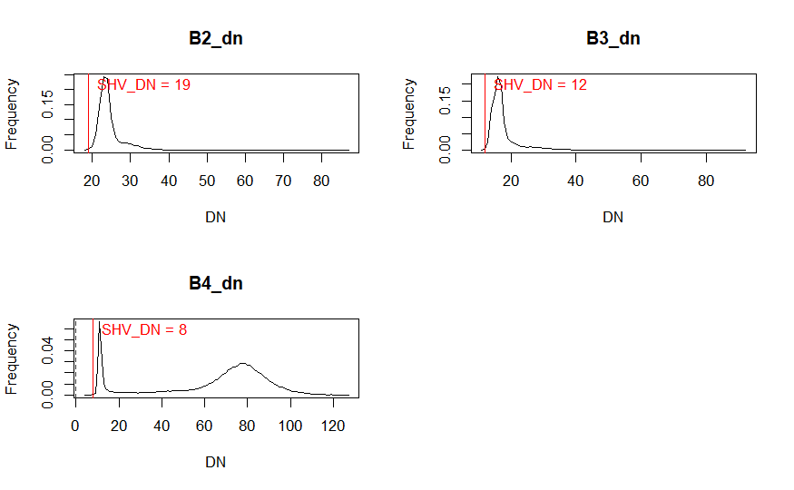
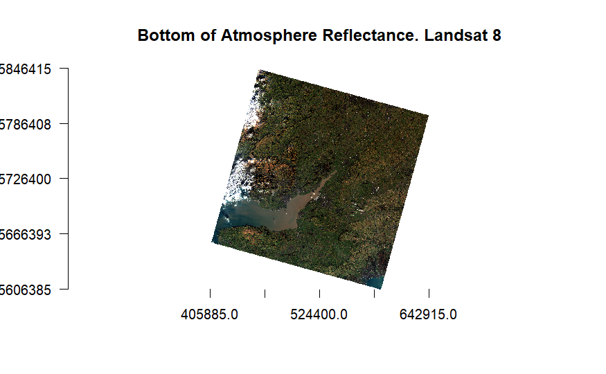
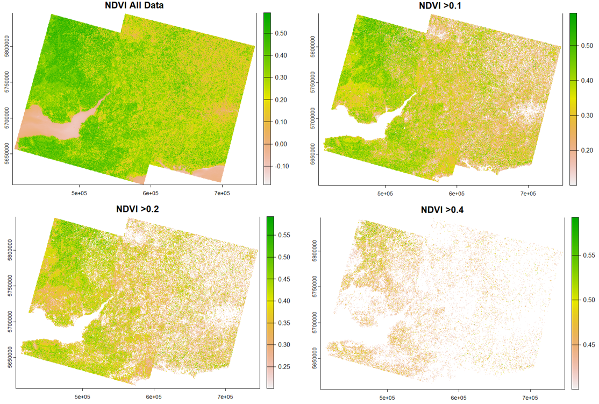
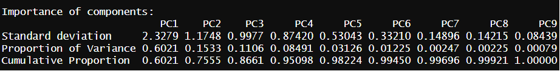
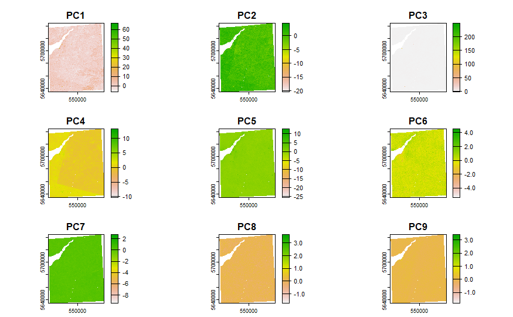
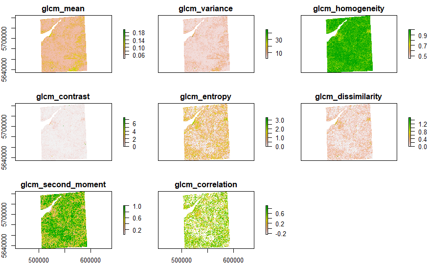

Week 3 Atmosphere Corrections
This week we covered the corrections and enhancements for satellite imagery. It is importance to select proper appropriate imagery (Collection, Level, Tier) and understanding limitations like Top-of-Atmosphere (TOA) vs. Bottom-of-Atmosphere (BOA) reflectance. For this week’s diary, I presented the practical walk-through first and then summarised the lecture content with slight extension to other metrics that may be helpful. The application and literature review follows the course content summary.
Case Study of Bristol - Continued
This week’s topic is on correction, the author carried on with the Bristol study as the Bristol area happens to have overlap of Landsat 8 and 9. (Landsat 8 C1L1 for the first part of the practical time of capture is Jan19 to Jan29, 2024)

Landsat 8 image corrected (Dark Object Subtraction method) with adjusted reflectance values that account for atmospheric effects, leading to a more accurate image.

The values of the estimated minimum digital number (DN) across the image for Band 2, 3, and 4 that are considered to be affected by haze are 19, 12, and 8. Among the three, band 2 shows the most atmospheric scattering effects while band 4 shows the least around the red part of the spectrum.

Merging Images
In the second part of the practical, I downloaded Landsat 8 and 9, L2, with cloud cover 0 to 5% taken at Nov/25/2023 and Sep/05/2023 respectively.

After the NDVI plots, I clipped the shapefile of the Bristol surrounding area. (Again, it is acually a large area that includes Bristol and multiple other cities/towns)


After performing dimensioality reduction with PCA, the first 3 components contain 86.6% of variances. To analyse the source data collected here, the dimension can be reduced to PC1 to PC4 only, as they, in total, explains 95.098% of variance. Compared to the smaller study area tailored towards the urban areas of Bristol in week 6, this result is certainly less . This is because the area is largely grass and forest, not building-dense, Bristol city areas.

GLCM
Using GLCM (Grey-Level C0-occurrence Matrix) to perform texture analysis for Landsat images. Homogeneity measures the closeness of the distribution of elements in the GLCM to the GLCM diagonal, indicating areas where pixel values are similar to their neighbors, while reflecting uniform textures within the image. Second moment, or energy, quantifies texture uniformity an indicator where higher values denote areas with more consistent or smooth textures.
Correlation assesses how a pixel’s value is predictably related to its neighbors, with high values indicating a linear or predictable relationship in gray-level values across the texture. For GLCM, Mean refers to the average intensity or gray level within the analyzed window, offering insights into the overall brightness or reflectance of the area being studied. GLCM’s applications are covered here.

Summary of Correction Indices
The area of correction methods or ratio enhancement in remote sensing is rich and growing, I have summarised some key methods below:
Normalized Difference Vegetation Index (NDVI) is a remote sensing index that measures the health and density of vegetation on the Earth’s surface. NIR represents the near-infrared light reflected by vegetation, and RED represents the visible red light reflected by vegetation.
- \(NDVI = \frac{(NIR - RED)}{(NIR+RED)}\)
Aside from the NDVI, here are some other indicators that I have investigated and summarized:
ARVI (Atmospherically Resistant Vegetation Index) is commonly employed to tackle regions of high atmospheric aerosol content. It was originally proposed for remote sensing of EOS MODIS sensor. (Kaufman and Tanre 1992) The range for an ARVI is -1 to 1 where green vegetation generally falls between values of 0.20 to 0.80.
\(ARVI = \frac{(NIR - RED - y * (RED - BLUE))}{(NIR + RED - y*(RED-BLUE))}\)
According to ArcGIS: “ARVI is a vegetation-based index that minimizes the effects of atmospheric scattering caused by rain, fog, dust, smoke, or air pollution.”
y is a constant to correct for the atmospheric effects caused by aerosol scattering in red channel.
NDMI (Normalized Difference Moisture Index) helps monitoring and mapping water content in soil and vegetation. (Wilson and Sader 2002) It is calculated as Near-Infrared’s and Short-Wave Infrared’s difference over sum.:
\(NDMI = \frac{NIR - SWIR}{NIR + SWIR}\)
- In Landsat 8-9: \(NDMI =\frac{(Band5 - Band6)}{(Band5+Band6)}\)
SAVI (Soil-Adjusted Vegetation Index) is originally constructed to minimize soil brightness influences on NDVI, especially useful in areas with sparse vegetation. (AR Huete 1988)
\(SAVI =\frac{(NIR+Red+L)}{(NIR−Red)}∗(1+L)\)
SAVI introduces a soil brightness correction factor (L) to adjust the NDVI calculation, making it more accurate in sparse vegetation areas.
In Landsat 8-9: \(SAVI - \frac{Band5 - Band4}{Band5 + Band4 +0.5}\)
MSAVI (Modified Soil-Adjusted Vegetation Index) is an adjustment of SAVI, designed to minimize bare soil background effects more effectively and optimize vegetation monitoring. (Qi et al. 1994)
\(MSAVI = \frac{2*NIR + 1 - \sqrt{(2*NIR+1)-8*(NIR-RED)}}{2}\)
In Landsat 8-9: \(SAVI - \frac{2*Band5 + 1 - \sqrt{(Band5+1)^2 -8*(Band5-Band4)}}{2}\)
GNDVI (Green Normalized Difference Vegetation Index) focuses on chlorophyll content, primarily on the green spectral region for enhanced sensitivity to vegetation density. (Gitelson, Kaufman, and Merzlyak 1996)
\[NDVI = \frac{NIR - Green}{NIR +Green}\]
Landsat 8-9: \(NDMI =\frac{Band5 - Band3}{Band5 + Band3}\)
EVI (Enhanced Vegetation Index) was proposed to improve the sensitivity in high biomass regions and improves vegetation monitoring through a de-coupling of the canopy background signal and a reduction in atmospheric influences. (Alfredo Huete et al. 2002)
\(EVI=G \frac{(NIR−Red)}{(NIR+C1⋅Red−C2⋅Blue+L)}\)
In Landsat 8-9: \(EVI = 2.5 * \frac{Band5 - Band4}{Band5 + 6* Band4 - 7.5*Band2 + 1}\)
NDWI (Normalized Difference Water Index) was formulated for the detection of liquid water and moisture content of vegetation and soil.(Gao 1996)
\(NDWI_{veg}= \frac{(NIR+Green)}{(NIR−Green)}\)
In Landsat 8-9: \(NDWI = \frac{Band4-Band2}{Band4+band2}\)
These indicators, are sufficient only for basic analysis demands, to derive more hidden relations, more modern techniques such as deep learning,(Ma et al. 2019) and Semi-supervised representation learning (Yan et al. 2020) can also be employed.
Literature Review and Applications
Integrating the most appropriate remote sensing metrics for urban analytics is pivotal effective city planning or addressing other built-environment challenges. Among these measures, NDVI as is widely used for monitoring urban vegetation and urban green space,(Xue, Su, et al. 2017) whereas NDWI plays a critical role in urban water body and drought monitoring, it is also important for urban fire prevention.(Zhu 2017) Other metrics, such as ARVI, EVI, SAVI, MSAVI, and NDMI are still relevant in the industry and contemporary urban science, but recent studies call for both enhancement of the indices and nuanced applications. As suggested in many publications, such correction methods can be further refined to optimized the data contamination brought by atmospheric or other factors. Zhou et al. (2021) proposed the use of HANTS model (Harmonic Analysis of Time Series) to further optimize the parameter settings for NDVI reconstruction at a global scale and over longer period of time. Such methods are unique and well-rooted under today’s hype of LLM or “trying DL/complex machine learning frameworks on all problems”. Thus, investigations on further optimising the traditional correction methods with explainable models future research remains relevant and important.
Reflection
Reflecting on this week’s learning, it’s evident that the field of remote sensing is both complex and immensely powerful. Although, I am still seeing just seeing the tip of the iceberg by far, I do believe in the future of interdisciplinary potentials of remote sensing with city research. The process of selecting appropriate RS imagery, applying correction techniques, and utilizing various indices for environmental analysis is intricate but essential for extracting meaningful and reliable insights from the satellite data.(Jensen 1996) This knowledge not only enriched my technical skills but also enhanced myappreciation for the meticulous work behind the scenes of environmental monitoring and analysis.
In my continued case study of Bristol, served as a concept preview of the corrections in remote sensing and its applicability in real-world scenarios such as vegetation monitoring. The processed illustrated the importance of careful data selection, processing, and analytically flow in achieving robust outcomes. Furthermore, the discussion on correction methods and the summary of detailes of various vegetation and soil indices provided a comprehensive understanding of the tools and techniques.
As we continue our journey through the remote sensing module, this week’s focus on image correction and enhancements has laid a solid foundation for understanding the nuanced internal mechanics of satellite data processing. It has also sparked my curiosity about how these techniques can be applied to other areas of study, especially for urban resilience planning, smart cities design and disaster management. The insights gained this week will prepare us well regarding the basics for our future remote sensing projects.